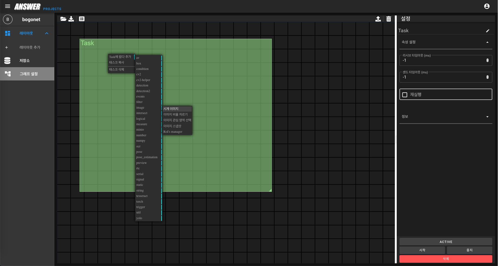
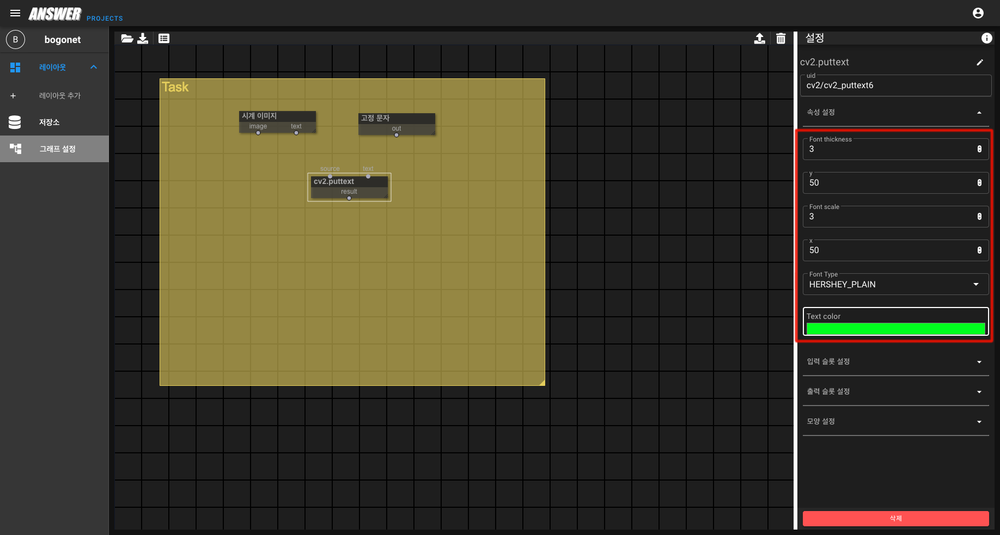

Hello World¶
OpenCV(Open Source Computer Vision)은 실시간 컴퓨터 비전을 목적으로 한 프로그램 라이브러리입니다.
《엔서》에서 OpenCV를 사용하는 예시를 보여드립니다.
예시에서는 《puttext》 를 이용하여 이미지의 원하는 위치에 글자를 추가합니다.
경고
시작 항목의 《로그인》 ~ 《그래프》 페이지를 먼저 읽어주세요.
시계 이미지 람다 생성¶
현재 시간을 알려주는 람다입니다.
현재 시간의 이미지나 텍스트를 연결된 다음 람다로 전달합니다.
태스크에서 마우스 우클릭을 한 뒤 《Task에 람다 추가 // image // 시계 이미지》 람다를 확인합니다.
《시계 이미지》를 선택해 람다를 추가합니다.

고정 문자 람다 추가¶
《고정 문자》 람다를 추가합니다.
OpenCV 함수를 사용하기 위해 고정된 문자를 생성해주는 람다입니다.
속성의 《출력 문자열》에 《Hello World》 를 입력합니다.

cv2.puttext 람다 추가¶
OpenCV 의 《putText》함수 역할을 하는 람다입니다.
이미지의 원하는 위치에 정해진 문자열을 합쳐줍니다.
람다의 속성을 수정해 문자열의 두께, 출력위치, 폰트, 색상 등을 지정합니다.

그래프 실행하기¶
완성된 그래프는 《저장》 버튼으로 저장하고 실행시킬 수 있습니다.
화면 우측 상단의 《저장》 버튼을 눌러 그래프를 실행합니다.
정상 실행 유무는 태스크를 선택한 뒤 우측 하단의 상태정보를 통해 확인할 수 있습니다.
《Done // Initialize // Active // Error》 로 확인 할 수 있습니다.
puttext 결과 확인하기¶
《이미지 뷰어》 람다를 선택한 뒤 《VIEWER》 를 클릭합니다.
연결된 《cv2.puttext》 람다의 결과를 보여주기 위한 새로운 창이 생성됩니다.
《signal》 버튼을 눌러 실행 결과를 확인할 수 있습니다.